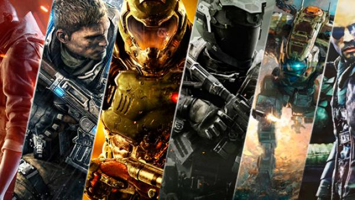
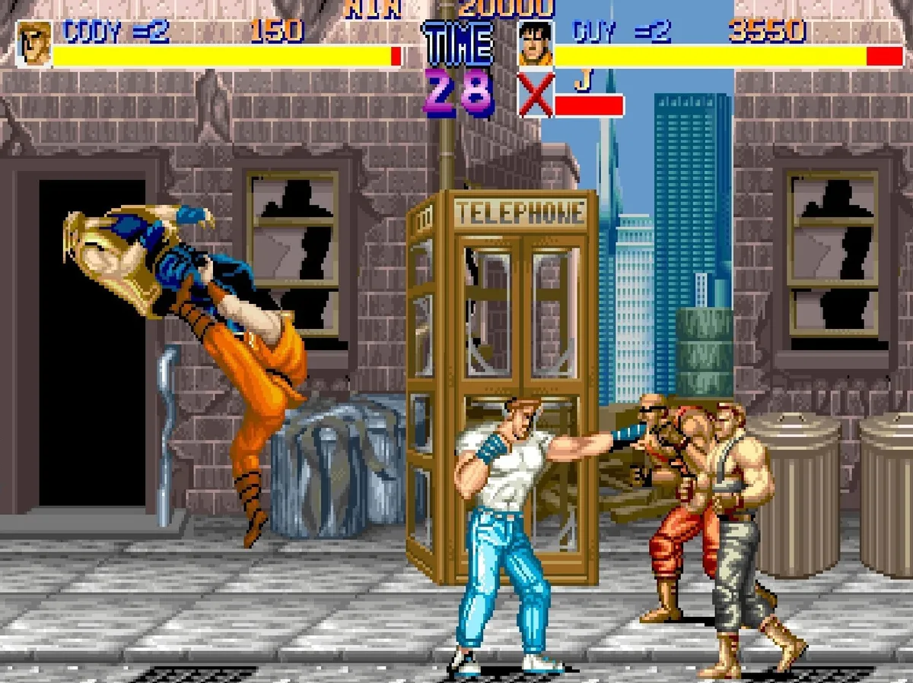
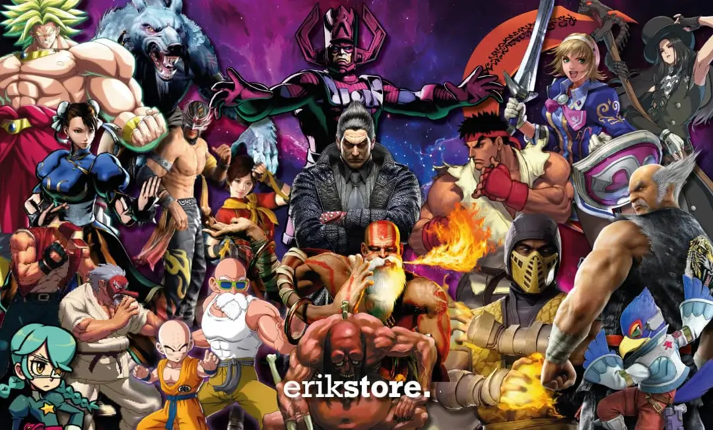
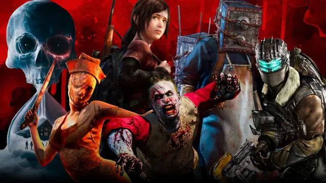
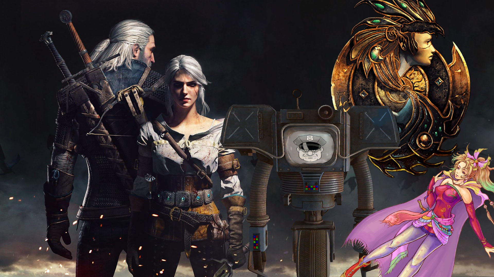
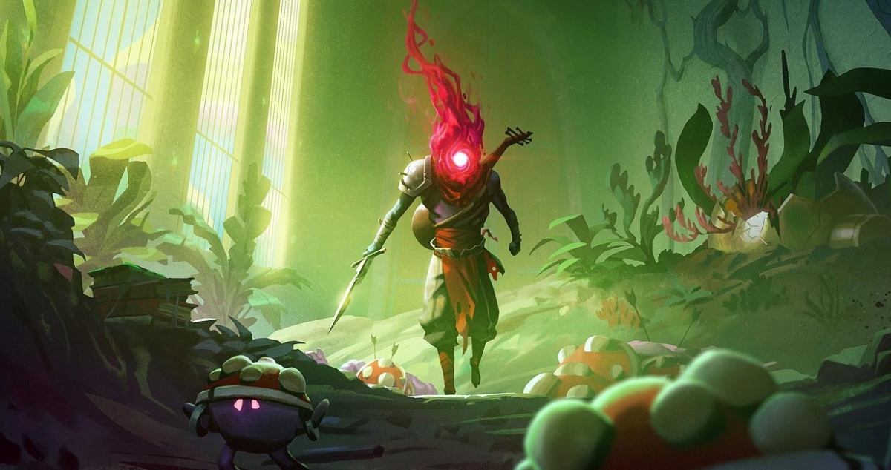
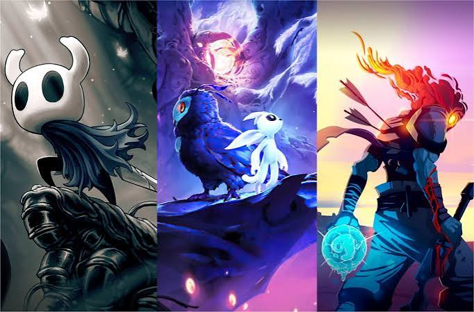

Explora nuestros géneros
Descubre diferentes tipos de videojuegos y conoce las características que hacen único a cada género.

Shooter
Videojuegos centrados principalmente en el uso de armas y combates a distancia.
Ver géneroSandbox
Ofrecen libertad para explorar, construir, crear y experimentar dentro del mundo del juego.
Ver género
Beat 'em Up
Género basado principalmente en combates cuerpo a cuerpo contra numerosos enemigos.
Ver género
Pelea
Videojuegos donde dos o más personajes se enfrentan directamente en combate.
Ver género
Survival Horror
Combina supervivencia, exploración, tensión y elementos de terror.
Ver género
Hack and Slash
Se caracteriza por combates rápidos contra grandes cantidades de enemigos.
Ver género
RPG
Permite desarrollar personajes, obtener habilidades y avanzar en una historia.
Ver género
Roguelike
Los niveles se generan de forma aleatoria y cada partida ofrece nuevos desafíos.
Ver género
Metroidvania
Se centra en la exploración de mapas, habilidades y acceso a nuevas zonas.
Ver género